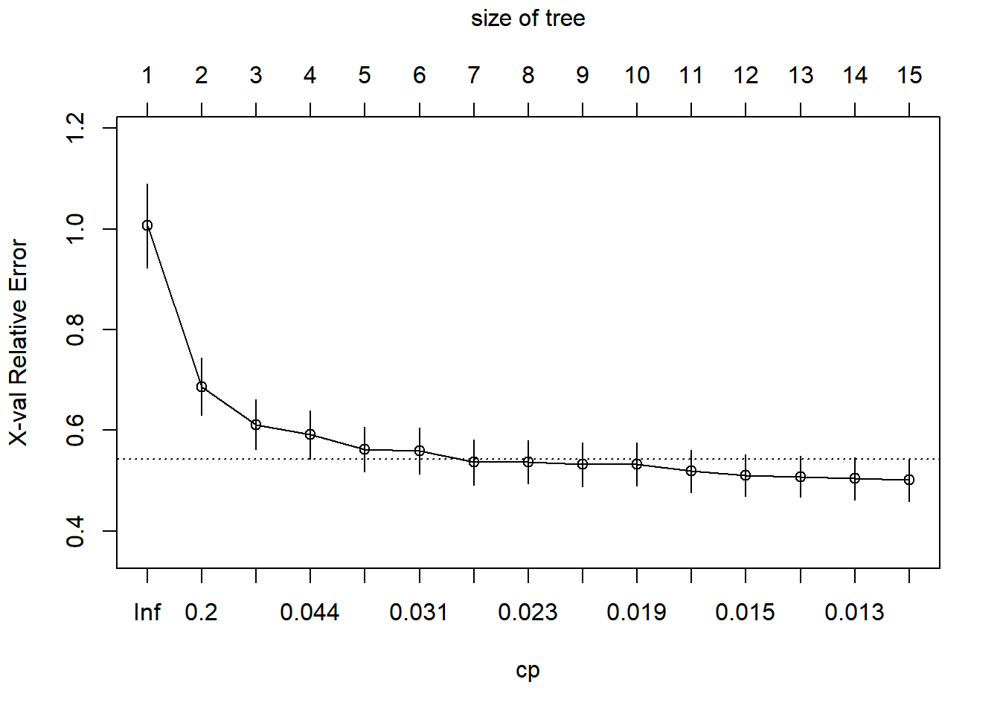
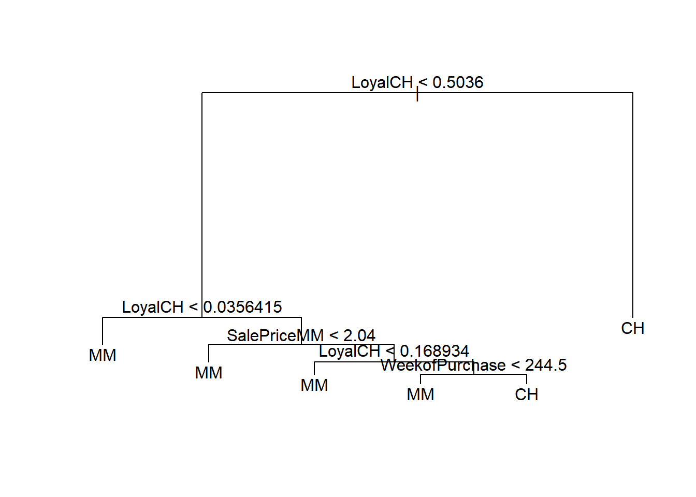
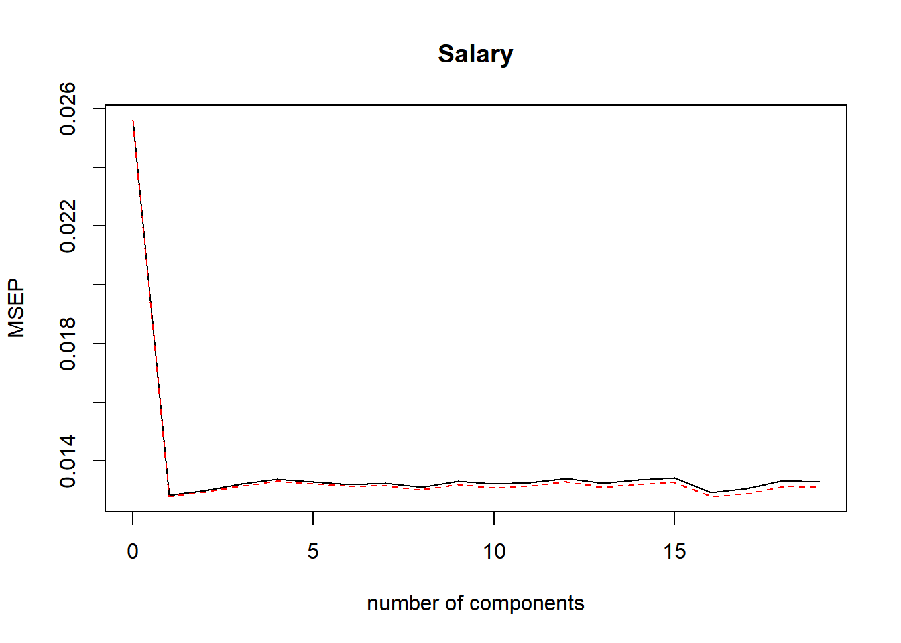
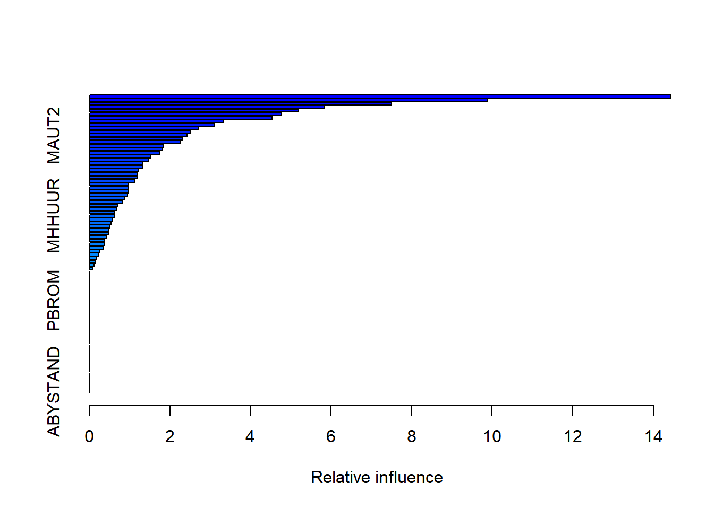

Desarrollo de los ejercicios del capitulo IV del libro “Una introducción al aprendizaje estadistico con aplicaciones en R”
Punto 7
- En el laboratorio, aplicamos bosques aleatorios a los datos de Boston usando mtry = 6 y usando ntree = 25 y ntree = 500. Cree un gráfico que muestre el error de prueba resultante de bosques aleatorios en este conjunto de datos para un rango de valores más amplio para mtry y ntree. Puede modelar su diagrama después de la Figura 8.10. Describa los resultados obtenidos.
library(MASS)
library(randomForest)## randomForest 4.6-14## Type rfNews() to see new features/changes/bug fixes.##
## Attaching package: 'randomForest'## The following object is masked from 'package:ggplot2':
##
## margintrain <- sample(1:nrow(Boston),length(Boston$crim)*0.70,replace = FALSE)
data.train <- Boston[train,-14]
data.test <- Boston[-train,-14]
y.train <- Boston[train,14]
y.test <- Boston[-train,14]
set.seed(0511)
boston.1 <- randomForest(x = data.train,y = y.train,xtest = data.test,ytest = y.test,
ntree = 500,mtry = ncol(Boston)-1)
boston.2 <- randomForest(x = data.train,y = y.train,xtest = data.test,ytest = y.test,
ntree = 500,mtry = (ncol(Boston)-1)/2)
boston.3 <- randomForest(x = data.train,y = y.train,xtest = data.test,ytest = y.test,
ntree = 500,mtry = sqrt(ncol(Boston)-1))
val <- data.frame(arboles = 1:500)
val["MSE1"] <- boston.1$test$mse
val["MSE2"] <- boston.2$test$mse
val["MSE3"] <- boston.3$test$mse
library(ggplot2)
library(reshape2)
xy <- melt(val,id=c("arboles"))
theme_set(theme_bw())
ggplot(xy)+geom_line(aes(x=arboles,y = value,color=variable))+
scale_color_manual(name=" m = ",labels=c("p","p/2","\u221Ap"),values = c("orange","red","green"))+labs(x = "Número de árboles",
y = "Error de clasificación") +
theme(legend.position="top")Con esta grafica podemos observar que la prueba MSE es muy alta para un solo arbol, a mededida que aunmenta los arboles el error se estabiliza aproximademente cuando hay 150 arboles, La estaibilización se presenta para los tres valores de “m”. El m que menor reprensenta error es m = \(sqrt(p)\).Ojo que al variar la semilla se podra concluir diferente.
Punto 8
- En el laboratorio, se aplicó un árbol de clasificación al conjunto de datos de Carseats después de convertir las ventas en una variable de respuesta cualitativa. Ahora buscaremos predecir las ventas utilizando árboles de regresión y enfoques relacionados, tratando la respuesta como una variable cuantitativa.
(a) Divida el conjunto de datos en un conjunto de entrenamiento y un conjunto de prueba.
library(ISLR)
set.seed(0511)
train <- sample(1:nrow(Carseats),nrow(Carseats)*0.65,replace = FALSE)
carseats.train <- Carseats[train,]
carseats.test <- Carseats[-train,](b) Ajuste un árbol de regresión al conjunto de entrenamiento. Trace el árbol e interprete los resultados. ¿Qué prueba MSE obtienes?
library(rpart)
library(rpart.plot)
carseats.tree <- rpart(Sales~.,data = carseats.train)
rpart.plot(carseats.tree,box.palette = "RdBu",nn=TRUE)
pred <- predict(carseats.tree,carseats.test)
mean((pred - carseats.test$Sales)^2)## [1] 5.463956con el anterior resultado concluimos que el MSE es aproximadamente de 5.46.
(c) Utilice la validación cruzada para determinar el nivel óptimo de complejidad del árbol. ¿La poda del árbol mejora la prueba MSE?
printcp(carseats.tree)##
## Regression tree:
## rpart(formula = Sales ~ ., data = carseats.train)
##
## Variables actually used in tree construction:
## [1] Advertising Age CompPrice
## [4] Income Price ShelveLoc
## [7] US
##
## Root node error: 2084.7/260 = 8.0181
##
## n= 260
##
## CP nsplit rel error xerror xstd
## 1 0.328320 0 1.00000 1.00636 0.083418
## 2 0.118576 1 0.67168 0.68689 0.056595
## 3 0.045810 2 0.55310 0.61092 0.049569
## 4 0.041761 3 0.50729 0.59117 0.047620
## 5 0.030918 4 0.46553 0.56251 0.044079
## 6 0.030731 5 0.43461 0.55924 0.045740
## 7 0.023733 6 0.40388 0.53676 0.044968
## 8 0.021595 7 0.38015 0.53695 0.043152
## 9 0.019798 8 0.35856 0.53188 0.043446
## 10 0.018870 9 0.33876 0.53251 0.042926
## 11 0.015480 10 0.31989 0.51882 0.042220
## 12 0.015420 11 0.30441 0.51052 0.041593
## 13 0.013580 12 0.28899 0.50808 0.041005
## 14 0.012335 13 0.27541 0.50372 0.041579
## 15 0.010000 14 0.26307 0.50122 0.041944plotcp(carseats.tree)
min <- which.min(carseats.tree$cptable[,"xerror"])
print(min)## 15
## 15cpt <- carseats.tree$cptable[which.min(carseats.tree$cptable[,"xerror"]),"CP"]
cpt## [1] 0.01con la validación cruzada obtenemos un tamaño de arbol igual a 13 y un cp de 0.01357961
ptree <- prune(carseats.tree,cp = cpt)
rpart.plot(ptree,box.palette = "RdBu",nn=TRUE)
pred1 <- predict(ptree,newdata = carseats.test)
m2 <- mean((pred1-carseats.test$Sales)^2)
m2## [1] 5.463956Se disminuye el MSE despues de que se poda.
(d) Utilice el enfoque de embolsado para analizar estos datos. ¿Qué prueba MSE obtienes? Use la función importance() para determinar qué variables son más importantes.
bag.carseats <- randomForest(Sales~.,carseats.train,mtry=(ncol(Carseats)-1) ,importance=TRUE)
pred2 <- predict(bag.carseats,newdata = carseats.test)
mean((pred2- carseats.test$Sales)^2)## [1] 3.361658notablemente mejora el MSE a 3.37627.
importance(bag.carseats)## %IncMSE IncNodePurity
## CompPrice 26.67871283 183.54183
## Income 6.23358916 98.64888
## Advertising 13.57834499 110.41853
## Population 0.32338488 75.52763
## Price 68.47503499 599.01499
## ShelveLoc 77.26581305 725.54524
## Age 17.48598332 158.80999
## Education 0.01616168 57.99921
## Urban -1.71716623 11.09547
## US 5.07615837 11.71181Se puede concluir con lo anterior que Price,Shelveloc,CompPrice son variables importantes para este analisis.
(e) Utilice bosques aleatorios para analizar estos datos. ¿Qué prueba MSE obtienes? Use la función importance() para determinar qué variables son las más importantes. Describa el efecto de m, el número de variables consideradas en cada división, sobre la tasa de error obtenida.
bag.carseats <- randomForest(Sales ~ ., data = carseats.train, mtry = sqrt((ncol(Carseats) - 1)), importance = TRUE)
pred.bag <- predict(bag.carseats, newdata = carseats.test)
mean((pred.bag - carseats.test$Sales)^2)## [1] 3.391034Con lo anterior tenemos un MSE de 3.38
importance(bag.carseats)## %IncMSE IncNodePurity
## CompPrice 14.5403047 178.84227
## Income 2.6141067 154.02152
## Advertising 11.0107597 147.72102
## Population -0.9294335 133.60346
## Price 40.3920222 478.45992
## ShelveLoc 50.2416174 559.76511
## Age 10.8775741 194.24705
## Education -0.6566648 90.06653
## Urban -0.4877354 18.95984
## US 3.6856553 23.97304Con lo anterior cuncluimos que las mejores varibales predictoras para el analisis son las mismas que el numeral anterior.
Punto 9
- Este problema involucra el conjunto de datos de OJ que es parte del paquete ISLR.
(a) Cree un conjunto de entrenamiento que contenga una muestra aleatoria de 800 observaciones, y un conjunto de prueba que contenga las observaciones restantes.
train <- sample(x = 1:nrow(OJ),size = 800)
OJ.train <- OJ[train,]
OJ.test <- OJ[-train,](b) Ajuste un árbol a los datos de entrenamiento, con Compra como respuesta y las otras variables como predictores. Use la función summary() para generar estadísticas resumidas sobre el árbol y describa los resultados obtenidos. ¿Cuál es la tasa de error de entrenamiento? ¿Cuántos nodos terminales tiene el árbol?
set.seed(0511)
library(tree)
tree.oj <- tree(Purchase~.,data = OJ.train)
summary(tree.oj)##
## Classification tree:
## tree(formula = Purchase ~ ., data = OJ.train)
## Variables actually used in tree construction:
## [1] "LoyalCH" "SalePriceMM"
## [3] "SpecialCH" "WeekofPurchase"
## [5] "ListPriceDiff" "PctDiscMM"
## Number of terminal nodes: 10
## Residual mean deviance: 0.7071 = 558.6 / 790
## Misclassification error rate: 0.1525 = 122 / 800Este arbalo tiene 8 nodos terminales y una tasa de error de entrenamiento de 0.1612
(c) Escriba el nombre del objeto del árbol para obtener una salida de texto detallada. Elija uno de los nodos terminales e interprete la información que se muestra.
tree.oj## node), split, n, deviance, yval, (yprob)
## * denotes terminal node
##
## 1) root 800 1063.000 CH ( 0.61875 0.38125 )
## 2) LoyalCH < 0.5036 351 424.900 MM ( 0.29345 0.70655 )
## 4) LoyalCH < 0.0356415 47 0.000 MM ( 0.00000 1.00000 ) *
## 5) LoyalCH > 0.0356415 304 389.300 MM ( 0.33882 0.66118 )
## 10) SalePriceMM < 2.04 167 176.600 MM ( 0.22156 0.77844 )
## 20) SpecialCH < 0.5 137 124.000 MM ( 0.16788 0.83212 ) *
## 21) SpecialCH > 0.5 30 41.460 MM ( 0.46667 0.53333 ) *
## 11) SalePriceMM > 2.04 137 189.700 MM ( 0.48175 0.51825 )
## 22) LoyalCH < 0.168934 27 22.650 MM ( 0.14815 0.85185 ) *
## 23) LoyalCH > 0.168934 110 150.700 CH ( 0.56364 0.43636 )
## 46) WeekofPurchase < 244.5 17 15.840 MM ( 0.17647 0.82353 ) *
## 47) WeekofPurchase > 244.5 93 122.100 CH ( 0.63441 0.36559 ) *
## 3) LoyalCH > 0.5036 449 341.700 CH ( 0.87305 0.12695 )
## 6) LoyalCH < 0.764572 193 220.800 CH ( 0.74093 0.25907 )
## 12) ListPriceDiff < 0.235 74 102.600 MM ( 0.50000 0.50000 )
## 24) PctDiscMM < 0.196197 59 78.900 CH ( 0.61017 0.38983 ) *
## 25) PctDiscMM > 0.196197 15 7.348 MM ( 0.06667 0.93333 ) *
## 13) ListPriceDiff > 0.235 119 82.090 CH ( 0.89076 0.10924 ) *
## 7) LoyalCH > 0.764572 256 64.200 CH ( 0.97266 0.02734 ) *Escogemos el nodo terminal 15, debido a que es un nodo terminal debido al asterisco.apreciamos que su criterio de división es LoyalCH > 0.764572 esta tiene 254 observaciones en este nodo y una desviación estandar 64.090. La predicción general para la rama CH,también podemos ver que el 97.24% de las observaciones toman el valor de CH, mientras que el 0.02756 tomal el valor de MM.
(d) Cree un diagrama del árbol e interprete los resultados.
plot(tree.oj)
text(tree.oj, pretty = 0)Podemos apreciar que el nodo principal es LoyalCH si es menor o igual a 0.50 solo usa a su misma variables , pero si es menor utiliza a PriceDiff.
(e) Predecir la respuesta en los datos de prueba, y producir una matriz de confusión comparando las etiquetas de prueba con las etiquetas de prueba predichas. ¿Cuál es la tasa de error de prueba?
library(caret)
tree.pred <- predict(tree.oj, OJ.test, type = "class")
matrix<-confusionMatrix(tree.pred, OJ.test$Purchase)
matrix## Confusion Matrix and Statistics
##
## Reference
## Prediction CH MM
## CH 138 33
## MM 20 79
##
## Accuracy : 0.8037
## 95% CI : (0.7512, 0.8494)
## No Information Rate : 0.5852
## P-Value [Acc > NIR] : 1.923e-14
##
## Kappa : 0.5887
##
## Mcnemar's Test P-Value : 0.09929
##
## Sensitivity : 0.8734
## Specificity : 0.7054
## Pos Pred Value : 0.8070
## Neg Pred Value : 0.7980
## Prevalence : 0.5852
## Detection Rate : 0.5111
## Detection Prevalence : 0.6333
## Balanced Accuracy : 0.7894
##
## 'Positive' Class : CH
## Observamos que la precisión del modelo es de 82.89%, siendo mas preciso para predecir a CH con un 90.65% mientras que para predecir MM sólo es de un 70.91%. (f) Aplique la función cv.tree() al conjunto de entrenamiento para determinar el tamaño óptimo del árbol.
cv.oj <- cv.tree(tree.oj,FUN = prune.misclass)
cv.oj## $size
## [1] 10 9 6 2 1
##
## $dev
## [1] 142 144 151 157 305
##
## $k
## [1] -Inf 0.000000 4.333333 6.250000
## [5] 145.000000
##
## $method
## [1] "misclass"
##
## attr(,"class")
## [1] "prune" "tree.sequence"(g) Produzca un diagrama con el tamaño del árbol en el eje xy la tasa de error de clasificación con validación cruzada en el eje y.
library(ggplot2)
library(reshape2)
valores <- data.frame(Size=cv.oj$size,Dev=cv.oj$dev)
theme_set(theme_bw())
ggplot(data = valores, aes(x=Size, y=Dev)) +
geom_line(color="red", linetype = "dashed") +
geom_point() +
scale_x_discrete(limits=c(1:9))(h) ¿Qué tamaño de árbol corresponde a la tasa de error de clasificación con validación cruzada más baja? 5 es el tamaño con menor error
(i) Produzca un árbol podado correspondiente al tamaño óptimo del árbol obtenido mediante validación cruzada. Si la validación cruzada no conduce a la selección de un árbol podado, cree un árbol podado con cinco nodos terminales.
prune.oj <- prune.misclass(tree.oj,best = 5)
plot(prune.oj)
text(prune.oj,pretty = 0)
(j) Compare las tasas de error de entrenamiento entre los árboles podados y no podados. ¿Cuál es más alto?
summary(prune.oj)##
## Classification tree:
## snip.tree(tree = tree.oj, nodes = c(10L, 3L))
## Variables actually used in tree construction:
## [1] "LoyalCH" "SalePriceMM"
## [3] "WeekofPurchase"
## Number of terminal nodes: 6
## Residual mean deviance: 0.8552 = 679 / 794
## Misclassification error rate: 0.1688 = 135 / 800summary(tree.oj)##
## Classification tree:
## tree(formula = Purchase ~ ., data = OJ.train)
## Variables actually used in tree construction:
## [1] "LoyalCH" "SalePriceMM"
## [3] "SpecialCH" "WeekofPurchase"
## [5] "ListPriceDiff" "PctDiscMM"
## Number of terminal nodes: 10
## Residual mean deviance: 0.7071 = 558.6 / 790
## Misclassification error rate: 0.1525 = 122 / 800observamos que hay una diferencia en el erro mayor el arbol podado. (k) Compare las tasas de error de prueba entre los árboles podados y no podados. ¿Cuál es más alto?
prune.pred <- predict(prune.oj, OJ.test, type = "class")
matrix<-confusionMatrix(prune.pred, OJ.test$Purchase)
matrix## Confusion Matrix and Statistics
##
## Reference
## Prediction CH MM
## CH 140 39
## MM 18 73
##
## Accuracy : 0.7889
## 95% CI : (0.7353, 0.836)
## No Information Rate : 0.5852
## P-Value [Acc > NIR] : 1.161e-12
##
## Kappa : 0.553
##
## Mcnemar's Test P-Value : 0.008071
##
## Sensitivity : 0.8861
## Specificity : 0.6518
## Pos Pred Value : 0.7821
## Neg Pred Value : 0.8022
## Prevalence : 0.5852
## Detection Rate : 0.5185
## Detection Prevalence : 0.6630
## Balanced Accuracy : 0.7689
##
## 'Positive' Class : CH
## observamos que bajo la presicion del modelo notablemente con respecto al árbol sin podar.
Punto 10
- Ahora usamos el aumento para predecir el salario en el conjunto de datos de Hitters.
(a) Elimine las observaciones para las que se desconoce la información salarial, y luego transforme logarítmicamente los salarios.
Hitters <- na.omit(Hitters)
Hitters$Salary <- log(Hitters$Salary)(b) Cree un conjunto de entrenamiento que consista en las primeras 200 observaciones, y un conjunto de prueba que consista en las observaciones restantes.
train <- 1:200
Hitters.train <- Hitters[train,]
Hitters.test <- Hitters[-train,](c) Realice un refuerzo en el conjunto de entrenamiento con 1,000 árboles para un rango de valores del parámetro de contracción \(\lambda\). Produzca un gráfico con diferentes valores de contracción en el eje xy el conjunto de entrenamiento MSE correspondiente en el eje y.
library(gbm)## Loaded gbm 2.1.5set.seed(0511)
lambdas = seq(0.001, 0.3, 0.005)
mse <- rep(0, length(lambdas))
for (i in 1:length(lambdas)) {
boost.hitters <- gbm(Salary ~ ., data = Hitters.train, distribution = "gaussian", n.trees = 1000, shrinkage = lambdas[i])
pred.train <- predict(boost.hitters, Hitters.train, n.trees = 1000)
mse[i] <- mean((pred.train - Hitters.train$Salary)^2)
}library(ggplot2)
mse_graph <- data.frame(lambdas)
mse_graph["MSE"]<- mse
names(mse_graph) <- c("Lambdas", "MSE")
theme_set(theme_bw())
ggplot(data = mse_graph, aes(x = Lambdas, y = MSE)) +
geom_line(color="red", linetype = "dashed") +
geom_point() (d) Produzca un gráfico con diferentes valores de contracción en el eje xy el conjunto de prueba MSE correspondiente en el eje y.
mse2 <- rep(NA, length(lambdas))
for (i in 1:length(lambdas)) {
boost.hitters <- gbm(Salary ~ ., data = Hitters.train, distribution = "gaussian", n.trees = 1000, shrinkage = lambdas[i])
yhat <- predict(boost.hitters, Hitters.test, n.trees = 1000)
mse2[i] <- mean((yhat - Hitters.test$Salary)^2)
}library(ggplot2)
mse_graph2 <- data.frame(lambdas)
mse_graph2["MSE"]<- mse2
names(mse_graph2) <- c("Lambdas", "MSE")
theme_set(theme_bw())
ggplot(data = mse_graph2, aes(x = Lambdas, y = MSE)) +
geom_line(color="red", linetype = "dashed") +
geom_point() min(mse2)## [1] 0.2461295lambdas[which.min(mse2)]## [1] 0.131(e) Compare la prueba MSE de refuerzo con la prueba MSE que resulta de aplicar dos de los enfoques de regresión vistos en los Capítulos 3 y 6.
mod8.10 <- lm(Salary~.,data = Hitters.train)
pred8.10 <- predict(mod8.10,Hitters.test)
mean((pred8.10-Hitters.test$Salary)^2)## [1] 0.4917959library(pls)##
## Attaching package: 'pls'## The following object is masked from 'package:caret':
##
## R2## The following object is masked from 'package:stats':
##
## loadingspcr.fit=pcr(Salary~., data=Hitters.train , scale=TRUE , validation ="CV")
validationplot(pcr.fit ,val.type="MSEP")
pcr.pred=predict (pcr.fit ,Hitters.test,ncomp =1)
mean((pcr.pred -Hitters.test$Salary)^2)## [1] 0.4661183observamos que el MSE de la regresion lineal y de las componentes principales es mayor el MSE por el metodo Boosting
(f) ¿Qué variables parecen ser los predictores más importantes en el modelo impulsado?
boost.hitters <- gbm(Salary ~ ., data = Hitters.train, distribution = "gaussian", n.trees = 1000, shrinkage = lambdas[which.min(mse2)])
summary(boost.hitters)## var rel.inf
## CAtBat CAtBat 22.1891184
## PutOuts PutOuts 8.1156374
## CRBI CRBI 7.7992242
## CWalks CWalks 7.2267797
## Walks Walks 6.9703139
## Assists Assists 6.0854321
## CHmRun CHmRun 5.2576243
## Hits Hits 5.2422222
## Years Years 4.8380328
## CRuns CRuns 4.6471959
## RBI RBI 4.6430518
## AtBat AtBat 3.5618987
## HmRun HmRun 3.5243625
## Errors Errors 3.0632824
## CHits CHits 2.7467221
## Runs Runs 2.7155911
## Division Division 0.6010006
## NewLeague NewLeague 0.5563958
## League League 0.2161140En la tabla se observa que la variable mas importante es CatBat.
(g) Ahora aplique el embolsado al conjunto de entrenamiento. ¿Cuál es el conjunto de prueba MSE para este enfoque?
bag.hitters <- randomForest(Salary ~ ., data = Hitters.train, mtry = 19)
yhat.bag <- predict(bag.hitters, newdata = Hitters.test)
mean((yhat.bag - Hitters.test$Salary)^2)## [1] 0.228878El MSE es de 0.2339 es mucho mejor que los otros metodos por el momento. ## Punto 11
- Esta pregunta utiliza el conjunto de datos de Caravan.
(a) Cree un conjunto de entrenamiento que consista en las primeras 1,000 observaciones,y un conjunto de prueba que consta de las observaciones restantes.
library(ISLR)
data(Caravan)
set.seed(1)
train <- 1:1000
Caravan$Purchase <- ifelse(Caravan$Purchase=="Yes",1,0)
Caravan.train <- Caravan[train,]
Caravan.test <- Caravan[-train,](b) Ajuste un modelo de refuerzo al conjunto de entrenamiento con Compra como respuesta y las otras variables como predictores. Use 1,000 árboles y un valor de contracción de 0.01. ¿Qué predictores parecen ser los más importantes?
set.seed(0511)
library(gbm)
boost.caravan <- gbm(Purchase~.,data = Caravan.train,distribution = "gaussian",
n.trees = 1000,shrinkage = 0.01)## Warning in gbm.fit(x = x, y = y, offset = offset,
## distribution = distribution, : variable 50:
## PVRAAUT has no variation.## Warning in gbm.fit(x = x, y = y, offset = offset,
## distribution = distribution, : variable 71:
## AVRAAUT has no variation.summary(boost.caravan)
## var rel.inf
## PPERSAUT PPERSAUT 14.43405766
## MKOOPKLA MKOOPKLA 9.89034478
## MOPLHOOG MOPLHOOG 7.50205143
## MBERMIDD MBERMIDD 5.84380723
## PBRAND PBRAND 5.20003102
## MGODGE MGODGE 4.77015089
## ABRAND ABRAND 4.54070084
## PWAPART PWAPART 3.32806272
## MINK3045 MINK3045 3.10332257
## MOSTYPE MOSTYPE 2.71570745
## MAUT1 MAUT1 2.49952878
## MAUT2 MAUT2 2.43012594
## MGODPR MGODPR 2.31804439
## MSKC MSKC 2.25671866
## MSKA MSKA 1.84647113
## MBERARBG MBERARBG 1.81529345
## MFWEKIND MFWEKIND 1.74205404
## PBYSTAND PBYSTAND 1.52034091
## MSKB1 MSKB1 1.48038258
## MRELOV MRELOV 1.32710469
## MBERHOOG MBERHOOG 1.31710895
## MGODOV MGODOV 1.22295353
## MINKGEM MINKGEM 1.20095519
## MGODRK MGODRK 1.20011710
## MFGEKIND MFGEKIND 1.12246225
## MOSHOOFD MOSHOOFD 0.98109203
## MRELGE MRELGE 0.98002274
## MINK7512 MINK7512 0.97939511
## MHKOOP MHKOOP 0.95004254
## MAUT0 MAUT0 0.87733188
## MBERARBO MBERARBO 0.82218616
## MINK123M MINK123M 0.71061537
## MBERBOER MBERBOER 0.68313270
## MOPLMIDD MOPLMIDD 0.62721317
## MHHUUR MHHUUR 0.61901014
## MINK4575 MINK4575 0.56677668
## MGEMOMV MGEMOMV 0.53838028
## MINKM30 MINKM30 0.51153915
## MFALLEEN MFALLEEN 0.48725657
## APERSAUT APERSAUT 0.48460967
## PMOTSCO PMOTSCO 0.43437208
## MZFONDS MZFONDS 0.38771337
## MZPART MZPART 0.38089998
## MSKD MSKD 0.34376075
## MBERZELF MBERZELF 0.27119713
## MGEMLEEF MGEMLEEF 0.22214190
## MRELSA MRELSA 0.16761448
## MSKB2 MSKB2 0.15588411
## PLEVEN PLEVEN 0.11516204
## MOPLLAAG MOPLLAAG 0.07475179
## MAANTHUI MAANTHUI 0.00000000
## PWABEDR PWABEDR 0.00000000
## PWALAND PWALAND 0.00000000
## PBESAUT PBESAUT 0.00000000
## PVRAAUT PVRAAUT 0.00000000
## PAANHANG PAANHANG 0.00000000
## PTRACTOR PTRACTOR 0.00000000
## PWERKT PWERKT 0.00000000
## PBROM PBROM 0.00000000
## PPERSONG PPERSONG 0.00000000
## PGEZONG PGEZONG 0.00000000
## PWAOREG PWAOREG 0.00000000
## PZEILPL PZEILPL 0.00000000
## PPLEZIER PPLEZIER 0.00000000
## PFIETS PFIETS 0.00000000
## PINBOED PINBOED 0.00000000
## AWAPART AWAPART 0.00000000
## AWABEDR AWABEDR 0.00000000
## AWALAND AWALAND 0.00000000
## ABESAUT ABESAUT 0.00000000
## AMOTSCO AMOTSCO 0.00000000
## AVRAAUT AVRAAUT 0.00000000
## AAANHANG AAANHANG 0.00000000
## ATRACTOR ATRACTOR 0.00000000
## AWERKT AWERKT 0.00000000
## ABROM ABROM 0.00000000
## ALEVEN ALEVEN 0.00000000
## APERSONG APERSONG 0.00000000
## AGEZONG AGEZONG 0.00000000
## AWAOREG AWAOREG 0.00000000
## AZEILPL AZEILPL 0.00000000
## APLEZIER APLEZIER 0.00000000
## AFIETS AFIETS 0.00000000
## AINBOED AINBOED 0.00000000
## ABYSTAND ABYSTAND 0.00000000En la tabla observamos PPERSAUT y MKOOPKLA son las mas importantes.
(c) Utilice el modelo de refuerzo para predecir la respuesta en los datos de la prueba. Predecir que una persona realizará una compra si la probabilidad estimada de compra es superior al 20%. Forme una matriz de confusión. ¿Qué fracción de las personas que predijeron hacer una compra en realidad la hacen? ¿Cómo se compara esto con los resultados obtenidos al aplicar KNN o regresión logística a este conjunto de datos?
<<<<<<< HEAD
library(caret)
probs.test <- predict(boost.caravan,Caravan.test,n.trees = 1000,type = "response")
predict.test <- ifelse( probs.test > 0.2, 1 , 0)
matrixx <- confusionMatrix(as.factor(predict.test),as.factor(Caravan.test$Purchase))
matrixx## Confusion Matrix and Statistics
##
## Reference
## Prediction 0 1
## 0 4493 277
## 1 40 12
##
## Accuracy : 0.9343
## 95% CI : (0.9269, 0.9411)
## No Information Rate : 0.9401
## P-Value [Acc > NIR] : 0.9566
##
## Kappa : 0.0531
##
## Mcnemar's Test P-Value : <2e-16
##
## Sensitivity : 0.99118
## Specificity : 0.04152
## Pos Pred Value : 0.94193
## Neg Pred Value : 0.23077
## Prevalence : 0.94007
## Detection Rate : 0.93177
## Detection Prevalence : 0.98922
## Balanced Accuracy : 0.51635
##
## 'Positive' Class : 0
## Observamos que la personas que en realidad harán una compra la predicción tiene un precisión del 4.15%
logit.caravan <- glm(Purchase ~ ., data = Caravan.train, family = "binomial")## Warning: glm.fit: fitted probabilities numerically
## 0 or 1 occurredprobs.test2 <- predict(logit.caravan,Caravan.test,type = "response")## Warning in predict.lm(object, newdata, se.fit,
## scale = 1, type = if (type == : prediction from a
## rank-deficient fit may be misleadingpred.test2 <- ifelse(probs.test > 0.2, 1, 0)
matriz <- confusionMatrix(as.factor(pred.test2), as.factor(Caravan.test$Purchase))
matriz## Confusion Matrix and Statistics
##
## Reference
## Prediction 0 1
## 0 4493 277
## 1 40 12
##
## Accuracy : 0.9343
## 95% CI : (0.9269, 0.9411)
## No Information Rate : 0.9401
## P-Value [Acc > NIR] : 0.9566
##
## Kappa : 0.0531
##
## Mcnemar's Test P-Value : <2e-16
##
## Sensitivity : 0.99118
## Specificity : 0.04152
## Pos Pred Value : 0.94193
## Neg Pred Value : 0.23077
## Prevalence : 0.94007
## Detection Rate : 0.93177
## Detection Prevalence : 0.98922
## Balanced Accuracy : 0.51635
##
## 'Positive' Class : 0
## Utilizando la regresion logística para predecir las personas que realmente hicieron una compra tiene un apresición de 4.1%.
Punto 12
- Aplique impulso, embolsado y bosques aleatorios a un conjunto de datos de su elección. Asegúrese de ajustar los modelos en un conjunto de entrenamiento y evaluar su desempeño en un conjunto de prueba. ¿Cuán precisos son los resultados en comparación con métodos simples como la regresión lineal o logística? ¿Cuál de estos enfoques produce el mejor rendimiento?
Uitilizando una base de datos de niños deportistas en Antiquia del 2018 de morfologia. Con esta base de intentara clasificar el peso en kg por ensima y por debajo de la mediana.
Morfo <- read.csv2("C:/Users/jupja/Desktop/UN/TAE/Taller-TAE-2019-2.github.io/Morfologia_ninos_ANT.csv",sep = ";")
Morfo <- Morfo[,-1]
Morfo <- na.omit(Morfo)
peso01 <- rep(0,length(Morfo$Peso.kg.))
peso01[Morfo$Peso.kg. > median(Morfo$Peso.kg.)]<-1
Morfo$peso01 <- peso01
Morfo <- Morfo[,-1]
train <- sample(1:nrow(Morfo),length(Morfo$peso01)*0.70,replace = FALSE)
Morfo.train <- Morfo[train,]
Morfo.test <- Morfo[-train,]Aplicando Boosting
set.seed(0511)
bf <- gbm(peso01~.,Morfo.train,distribution = "bernoulli",n.trees = 5000)
bprobs <- predict(bf,newdata = Morfo.test,n.trees = 5000)
bpredic <- ifelse(bprobs >0.5,1,0)
table(bpredic,Morfo.test$peso01)##
## bpredic 0 1
## 0 547 20
## 1 14 515Podemos concluir con lo anterior que este modelo puede clasificar un 96.62% de la veces el peso de los niños por encima y por debajo de la mediana.
regresión logistica
logit.mor <- glm(peso01~.,data = Morfo.train,family = "binomial")## Warning: glm.fit: fitted probabilities numerically
## 0 or 1 occurredlogit.probs <- predict(logit.mor,newdata = Morfo.test,type = "response")
logit.pred <- ifelse(logit.probs >0.5 ,1,0)
table(logit.pred,Morfo.test$peso01)##
## logit.pred 0 1
## 0 551 28
## 1 10 507Tenemos un error de clasifación de 3.83%.
bosques aleatorios
library(randomForest)
forest.morfo <- randomForest(peso01~.,data = Morfo.test,mtry=5)## Warning in randomForest.default(m, y, ...): The
## response has five or fewer unique values. Are you
## sure you want to do regression?for.probs <- predict(forest.morfo,newdata = Morfo.test)
for.predic <- ifelse(for.probs >0.5,1,0)
matrixx <- confusionMatrix(as.factor(for.predic),as.factor(Morfo.test$peso01))
matrixx## Confusion Matrix and Statistics
##
## Reference
## Prediction 0 1
## 0 561 2
## 1 0 533
##
## Accuracy : 0.9982
## 95% CI : (0.9934, 0.9998)
## No Information Rate : 0.5119
## P-Value [Acc > NIR] : <2e-16
##
## Kappa : 0.9963
##
## Mcnemar's Test P-Value : 0.4795
##
## Sensitivity : 1.0000
## Specificity : 0.9963
## Pos Pred Value : 0.9964
## Neg Pred Value : 1.0000
## Prevalence : 0.5119
## Detection Rate : 0.5119
## Detection Prevalence : 0.5137
## Balanced Accuracy : 0.9981
##
## 'Positive' Class : 0
## Concluimos que el error de predicción 0.09% para clasificar los pesos por encima y por debajo de la mediana.
regresión lineal.
lm.morf <- lm(peso01~.,Morfo.train)
probs.morf <- predict(lm.morf,Morfo.test)
predic.morf <- ifelse(probs.morf>0.5,1,0)
matrixx <- confusionMatrix(as.factor(predic.morf),as.factor(Morfo.test$peso01))
matrixx## Confusion Matrix and Statistics
##
## Reference
## Prediction 0 1
## 0 547 49
## 1 14 486
##
## Accuracy : 0.9425
## 95% CI : (0.9271, 0.9556)
## No Information Rate : 0.5119
## P-Value [Acc > NIR] : < 2.2e-16
##
## Kappa : 0.8848
##
## Mcnemar's Test P-Value : 1.839e-05
##
## Sensitivity : 0.9750
## Specificity : 0.9084
## Pos Pred Value : 0.9178
## Neg Pred Value : 0.9720
## Prevalence : 0.5119
## Detection Rate : 0.4991
## Detection Prevalence : 0.5438
## Balanced Accuracy : 0.9417
##
## 'Positive' Class : 0
## Observamos que el modelo tiene un error de predicción de 6.02%.
Conclusión: El mejor modelo para la predicción son los bosques aleatorios con un error de 0.09% a comparación de los demas.